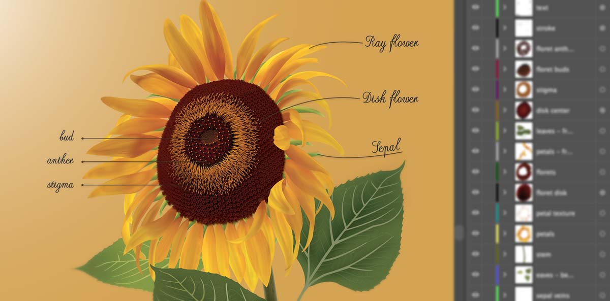

The goal of this project is to illustrate a botanical specimen as accurately as possible. Rendering all details of the sunflower, especially the florets are the most challenging part of this project.
After choosing a reference image, I illustrated the flower in Adobe Illustrator by patiently dealing with its intricate parts from petals, petal veins, stem, stem textures to leaves, leaf veins, sepals, and different phases of florets.
Sunflowers are with no fancy shape or mesmerizing color, but when I look at their cheerful faces, I feel sunshine, youth, joy, and vitality.
Every detail of the illustration was created by me using Adobe Illustrator